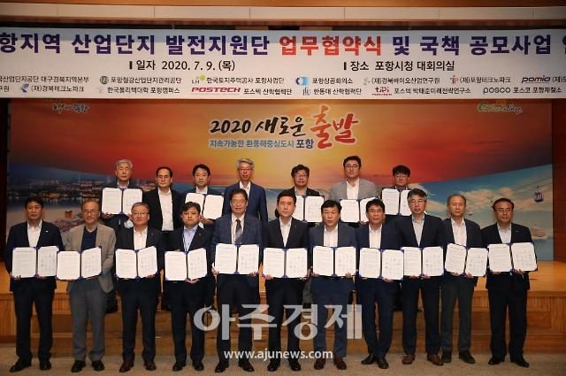

등록일 2020-07-10
지역 산업단지 활성화 돌입...지역경제 활성화 기여
경북 포항시는 9일 노후산업단지 재활성화와 산업단지 제조업 경쟁력 강화를 위해 ‘포항지역 산업단지 발전지원단’(이하 ‘발전지원단’)을 구성하기 위한 업무협약을 체결했다고 밝혔다.
포항시는 9일 노후산업단지 재활성화와 산업단지 제조업 경쟁력 강화를 위해 ‘포항지역 산업단지 발전지원단’을 구성하기 위한 업무협약을 체결했다. [사진=포항시 제공]
송경창 포항부시장과 이규하 한국산업단지공단 대구경북본부장을 공동단장으로 하는 발전지원단은 부품소재산업의 개발과 바이오산업 및 이차전지 등의 고부가가치 업종 유치, 산업단지 대 개조 및 구조 고도화, 국책공모사업 공동참여 등 지역의 산업단지 발전을 위해 상호 협력해 나가기로 했다.
시는 이날 협약을 통한 발전지원단 구성을 통해 지난 26일 국가예비타당성조사를 통과한 1354억 원 규모의 ‘철강 산업 재도약 기술개발사업’과 관련 철강 산업의 재도약과 이로 인한 지역경제 활성화 등 시너지효과를 거둘 수 있을 것으로 전망했다.
이강덕 포항시장은 “오늘 협약이 지역의 산업단지 발전을 위한 매우 중요한 출발점이 될 것”이라고 강조하고 “지역산업 발전을 토대로 지역경제가 다시 활력을 되찾을 수 있도록 전력을 기울여 나가겠다”고 밝혔다.
한편, 이번 발전지원단에는 한국산업단지공단 대구경북지역본부와 포항철강산업단지관리공단을 비롯해 포항상공회의소, 한국토지주택공사 포항사업단, 경북바이오산업연구원, 포항산업과학연구원, 경북테크노파크, 포항테크노파크, 포항금속소재산업진흥원, 포스코, 포스텍 박태준 미래전략연구소, 포스텍 산학협력단, 한동대학교 산학협력단, 한국폴리텍대학 포항캠퍼스, 한국전기차산업협회 등 15개 기관이 참여하기로 했다.
기사출처:
아주경제
(포항) 최주호 기자
입력 : 2020-07-10 05:28
https://www.ajunews.com/view/20200710052329346?fbclid=IwAR1yFRpYtAKJ41woAzZLuvjCE_8hnOgc5tXBzzpnQxn74NpTMrnhtyiYDac

